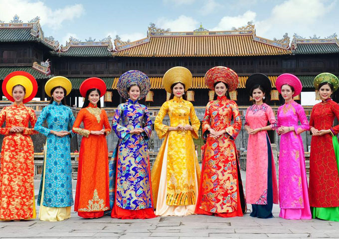
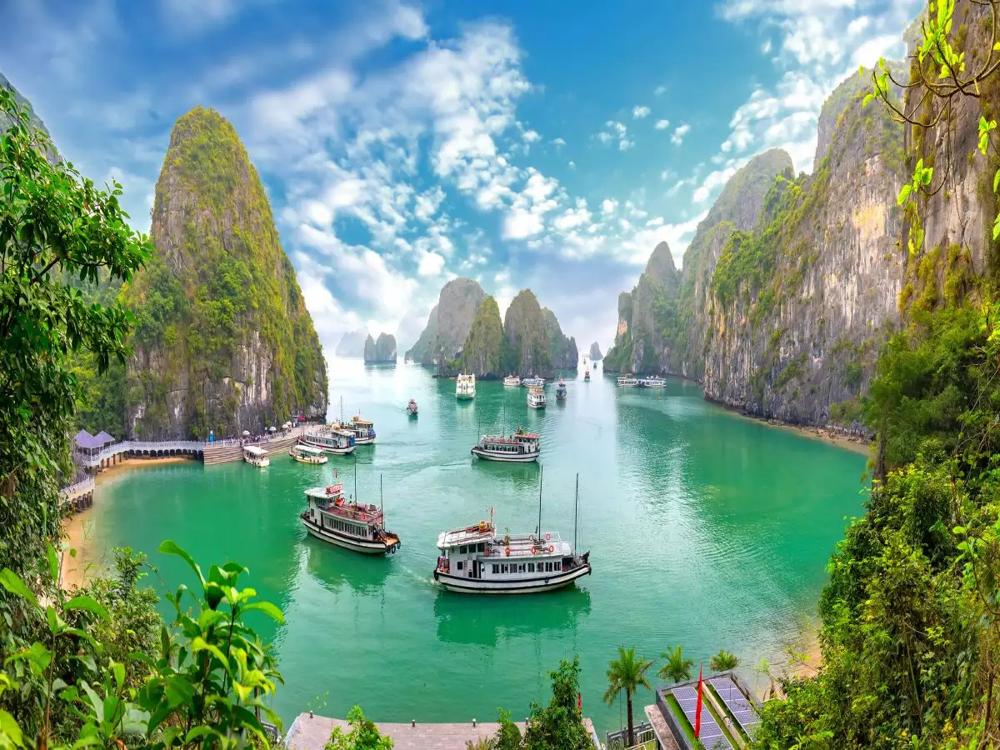

| Vietnam Culture | Vietnam Scenery | Vietnam Expenses |
Vietnam's flag is a yellow five-pointed star on a crimson backdrop.
The flag is a symbol of the country's resistance against French and communist dominance.
Despite its stormy history, the star on the flag reflects the country's national unity.
After the Vietnam War, with time, Vietnam has became a
bustling, flourishing, and prospering country in Southeast Asia.
It is home to approximately 98 million Vietnamese people as of year 2022.
The lifestyle of a typical Vietnamese person may perplex numerous foreigners.
It is uncommon for a Vietnamese to be inside in private. Due to the abundance
amount of street food and curbside attractions, the Vietnamese are always out
on the sidewalk. There are curbside barbershops, which means you can get a haircut
out in the open by going down the street. You're hungry and you don't want to drive?
Just walk outside! Chances are, there is a street food seller outside of your home.
As you go through the pages, you will get to learn about how it is like to be in Vietnam.
You will see how the way the people live in Vietnam. You will see historic and valued
places. Then, you will learn about how much it would cost to live comfortably in Vietnam.
Culture
Scenery
Expenses